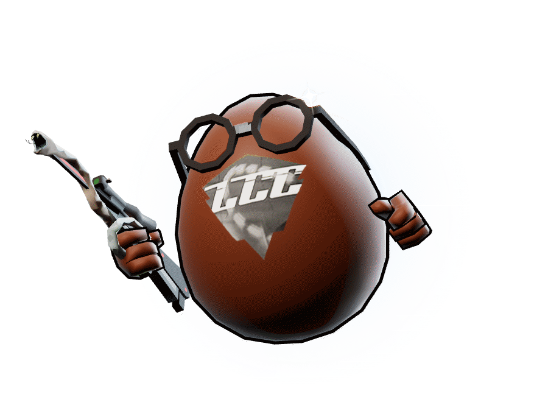

Everyone who was a kid after 2017 has played Shell Shockers at least once. In high school I was one of the best players in its competitive league, Shell League.
My name was poopy. Yes, I know it's hard to believe.
This is a fun fact about me I love talking about, and it's an accomplishment I'm weirdly proud of. This month I randomly stumbled across my old YouTube channel and was able to relive the glory days for a moment. It got me wondering, how good was I actually? So I built this.
That question became a ranking of every player across Shell League King of the Coop, seasons 4 to 7. Raw leaderboards lie. Snipers out-kill point players, a sub with three games can top a per-game list, and a final counts the same as a blowout. The index corrects for all three.

how i built it
poopy & a few AI agents
I set the rules. AI agents collected the data.
me
The questions and the rules. What counts: Shell League King of the Coop only. How a sniper and a point player get judged. Which games matter more. Who is who across 113 names. Then the modeling, which is where my stats and econ classes came in: shrinkage, paired comparisons and weighting.
the agents
The collecting. They read 134 scoreboard screenshots into 12,523 stat cells, pulled 3,681 lines of Discord chat, and imported the league's own sheets, results and map timers. Every number links back to the screenshot it came from.
agentsscrapeddiscord chat3,681 lines
agentstranscribedscoreboards134 screenshots
poopymodeledthe ranking23 stages
poopyshippedcoop-kings.vercel.app
pipeline / 23 stages
12,523stat cells, read off 134 scoreboard screenshots
clip 01data pipeline and scale
134 scoreboard screenshots became 1,443 rows and 12,523 stat cells.
50,710 kills logged across 132 games.
3,681 Discord chat lines, 808 of them judged by hand for the legacy score.
League sheets, results posts and 79 map timers fill what the boards miss.
ranking / bayesian shrinkage
50 / 40 / 10skill, league and legacy, after small samples get shrunk
clip 02ranking model
Empirical-Bayes shrinkage: three great maps don't beat thirty good ones.
Bradley-Terry ratings rate every team from who beat whom.
Each map is weighted 0.5x to 1.8x by opponent, length and margin. Playoffs and finals count 3x.
Kills against strong teams count up to 1.25x.
Snipers and point players are judged on different stat weights.
Career is 85% your best two seasons and 15% longevity.
models / 3 trained
88%of MVPs called right on maps it never saw. chance is 19%.
clip 03ML models
Role classifier: random forest, 400 trees. 86% accuracy in 5-fold cross-validation on 251 labelled maps.
MVP predictor: conditional logit. 88% top-1 on 61 held-out maps.
Win model: logistic regression. Kill share alone gets 88% accuracy (AUC 0.96) on 132 maps. Adding time on point and captures gets 97%.
A pytest suite of 167 tests checks the math before every publish.
Built withPrompt engineeringSpec writingPython: pandas, scikit-learn, NumPy, pytestStatistics and modelingData collection